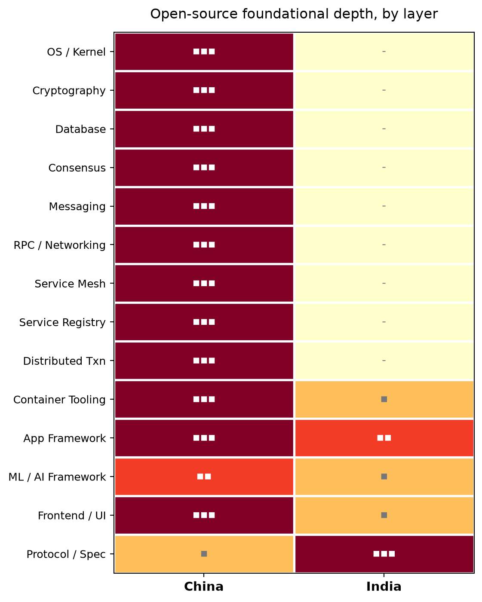
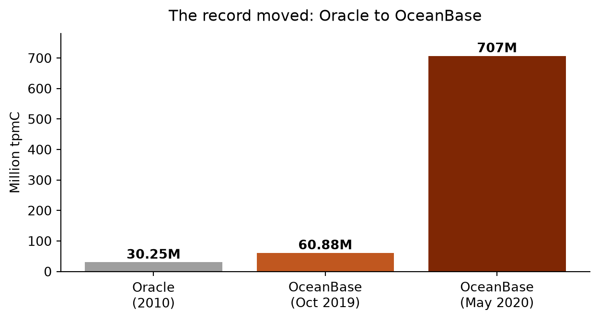
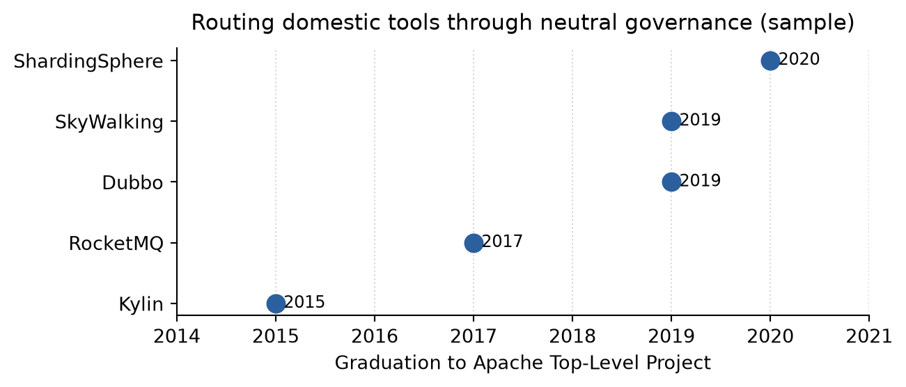
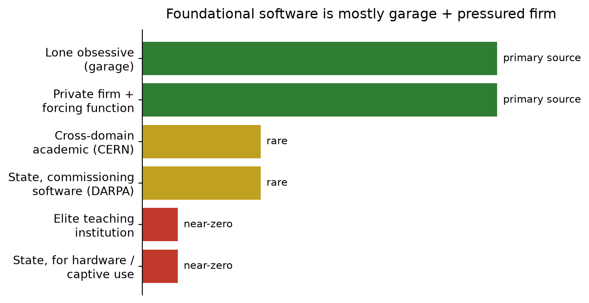

Renting the Floor
India's software success is forty years of services and labour-cost arbitrage. A verified, data-driven account of why it never became the capacity to build foundational software — and what would.
In one breath
India is called a software nation on the strength of some 17 million developers and a roughly US$254 billion industry. Both are real, and both measure the wrong thing: India writes application software for others, on foundations — databases, message queues, kernels — it does not own. China made the transition India did not, which removes talent and timing as excuses. Foundational software comes from five mechanisms, and the honest finding is that it is produced mostly by the garage and the private firm under real pressure, rarely by a CERN or a DARPA, and almost never by elite teaching institutions or hardware-focused state programmes — which is exactly what India leans on. India is doing a few things right (MOSIP, FLOSS/fund, Frappe), but the gap is structural, and closing it runs through clusters with real problems, not the IITs.
Every quantitative claim here has been checked against a primary or near-primary source; figures are current to mid-2026 and will drift. Charts marked author’s assessment are analytical judgements, defensible item by item but not measurements. Interpretations are the author’s and are meant to provoke. Errors of fact should be corrected; errors of opinion are on purpose.
The Claim
India is a software nation. The phrase is accepted the way weather is accepted — too obvious to interrogate. It should be interrogated, because it is largely false, and the precise way in which it is false is the most useful thing one can say about the Indian technology industry.
The truth is narrower. For forty years India has been very good at one thing: writing and maintaining application software for other people, at a price advantage, on infrastructure someone else built. The headline numbers are real and they all measure that one thing. India hosts roughly 17 million developers on GitHub, the second-largest population on the platform, growing about 28% a year. Its technology industry reached around US$254 billion in FY2024, of which some US$200 billion is exports, employing about 5.4 million people. It has produced over a hundred unicorns. Every one of those figures measures application and services output. None measures foundational software, and that distinction is the whole argument.
India rents the floor. It has rented the floor profitably for four decades, and mistaken the rent receipts for a deed. This document argues, in order and with the data shown rather than asserted:
- India's reputation rests on services and labour-cost arbitrage, not foundational software, and in forty years it has not transitioned from the first to the second.
- China, starting later, made exactly that transition — which removes talent and timing as explanations.
- Foundational software is produced by five mechanisms, and overwhelmingly by two of them — the lone obsessive and the private firm under a real forcing function. India runs neither under the conditions that make them fire.
- India is, nonetheless, doing a few specific things right, worth naming precisely.
- The provocation: routing innovation through elite academic institutions does not work for this problem; the configuration that would looks like a cluster of small firms with a real problem and no budget for evasion.
The Word Doing the Hiding
"Software" hides a distinction that governs everything. There is application software — the booking system, the wallet, the ERP rollout — and there is foundational software: the operating system, the database, the message queue, the language runtime, the compiler, the cryptographic library, the service mesh. The first is what a user touches. The second is what the first runs on, and what fails catastrophically and invisibly when it fails.
The distinction is not difficulty or prestige; excellent application software is harder than mediocre foundational software. It is dependency and control. Whoever owns the foundational layer sets the terms — price, roadmap, licence, the moment of deprecation — for everyone above it. A nation strong only in application software is structurally a tenant. It can be a prosperous tenant. It cannot set its own terms.
direction: down
app: "APPLICATION LAYER — where India builds" {
style.fill: "#e8f0fb"; style.stroke: "#2c5f9e"
a1: "Wallets / UPI apps"; a2: "ERP rollouts"; a3: "SaaS products"; a4: "IT services delivery"
}
found: "FOUNDATIONAL LAYER — where India rents" {
style.fill: "#fbe9e9"; style.stroke: "#9e2c2c"
f1: "OS / kernel"; f2: "Database"; f3: "Message queue / RPC"
f4: "Language runtime / compiler"; f5: "Service mesh / registry"; f6: "Cryptography"
}
app -> found: "depends on / runs on"The chart below scores both countries across fourteen foundational layers on a 0–3 scale: 0 means no globally-deployed open-source implementation from that country's industry, 3 means deep and adopted. The scoring is the author's judgement, defensible cell by cell; the shape is not an opinion.
India registers only at the extremes — the protocol layer (UPI, Aadhaar, ONDC) and, faintly, the application-framework layer. Across the entire infrastructure middle — database, queue, mesh, consensus, cryptography, kernel — it is an empty column. That column is the subject of this document.
The Existence Proof: China Made the Transition
China is here for one reason, and it is not rivalry: it is the existence proof. A generation ago China assembled and serviced what others designed. Today it owns deep foundational software across nearly every layer. The organising fact is the IOE-replacement effort — removing IBM (servers), Oracle (database), and EMC (storage) from Chinese enterprise infrastructure after these became cost and supply-chain risks. Almost every major Chinese foundational project traces to a US incumbent it was built to replace.
direction: right
us: "US incumbent" { style.fill: "#fbe9e9"
oracle: "Oracle"; ibm: "IBM MQ"; rhel: "RHEL"; envoy: "Envoy"; pg: "PostgreSQL"
}
cn: "Chinese replacement" { style.fill: "#e9f3ec"
ob: "OceanBase (C++)"; rmq: "RocketMQ (Java)"; oe: "openEuler (C)"; mosn: "MOSN (Go)"; og: "openGauss (C++)"
}
oracle -> ob; ibm -> rmq; rhel -> oe; envoy -> mosn; pg -> ogThe motive was survival before commerce. Ant/Alibaba built OceanBase because Oracle could not survive Alipay's load; by 2019 OceanBase entered the TPC-C benchmark and beat Oracle's nine-year-old record outright, then in 2020 beat its own. This is the cleanest single proof that the floor itself had moved.

The breadth is the point: this is an industry-wide reconstruction of the stack, not one company's hobby. OceanBase and openGauss (databases), RocketMQ (messaging), MOSN (service mesh), Nacos (registry), SOFAJRaft (consensus), openEuler (enterprise Linux), Kitex and Hertz from ByteDance (RPC/HTTP), PaddlePaddle and MindSpore (ML). And the deepest of them cross over on merit: more than a dozen Chinese-origin projects are now Apache Top-Level Projects, governed by a neutral US foundation — the trust signal foreign enterprises require. RocketMQ, by the foundation's own account, draws over 80% of its contributions from outside Alibaba.

The use of China ends here. It proves the transition is possible for a developing Asian economy in this era. Whatever explains India's gap, it is not impossibility, lateness, or a talent ceiling. That leaves conditions — and conditions are general, not Chinese.
How Foundational Software Actually Gets Built
This is the analytical core. Foundational software does not appear because a country has many programmers, any more than literature appears because a country is literate. It appears through five recurring mechanisms.
direction: down
M: "Five mechanisms that produce foundational software" {
style.fill: "#f4f4ef"
a: "1 - THE OBSESSIVE: one builder rebuilds a tool judged wrong at the root. SQLite, Git, Linux, Redis, curl." { style.fill: "#eef2f8" }
b: "2 - THE MASS COMMUNITY: many hands, shared standard, no owner. Linux, PostgreSQL, Apache, Kubernetes." { style.fill: "#eef2f8" }
c: "3 - TARGET-BOUND BACKING: an institution commissions a named deliverable. DARPA to BSD and TCP/IP." { style.fill: "#eef2f8" }
d: "4 - CROSS-DOMAIN CARRY: a domain expert carried by computing people in one room. CERN to the Web, statisticians to R." { style.fill: "#eef2f8" }
e: "5 - THE INTOLERANT REQUIREMENT: a business need at a scale that refuses the workaround. OceanBase, DynamoDB." { style.fill: "#eef2f8" }
}Mechanism one, the obsessive: one person decides the available tool is wrong at a level no configuration fixes, and rebuilds it. SQLite, Git, Linux, Redis, Nginx, curl. The builder is not asking permission and not chasing a market; the market arrives later, surprised.
Mechanism two, the mass community: no single owner, a standard many parties improve because all depend on it. Linux, PostgreSQL, the Apache projects, Kubernetes. This needs connective tissue — foundations, governance — more than individual genius.
Mechanism three, target-bound institutional backing: an institution commissions a specific foundational deliverable with a real downstream user, and protects the team until it ships. DARPA funding BSD and the early internet is the cleanest case. The operative word is target-bound: a named deliverable and a user, not an open-ended grant that buys papers.
Mechanism four, cross-domain carry: a domain expert is embedded with computing people who carry the software weight, in one room with a shared problem. CERN produced the Web this way; R came from statisticians, QGIS from a geographer.
Mechanism five, the intolerant requirement: a business need at a scale that makes the workaround fatal — the forcing function. OceanBase exists because Oracle could not survive Alipay's load at any price.
Now the finding that reorganises everything. These five are not equal producers. Look at where the world's foundational software actually came from, and the distribution is lopsided.

The garage and the pressured private firm are the primary producers everywhere. The cross-domain institute and the commissioning state agency are real but rare — CERN and DARPA are famous precisely because so few others did it. And the two sources at the bottom — the elite teaching institution and the state programme aimed at hardware or a captive user — are near-zero producers. That bottom pair is exactly what India leans on most. India's failure is not that the productive mechanisms are invalid; it is that India's garages and firms never met the conditions that fire them, while its institutions poured effort into the two sources that rarely produce foundations anywhere.
The State-Programme Question: DARPA, 863, Torch — and India
Because the reflex is to demand a "national mission," the state-programme record deserves precision. It does not say what the reflex assumes.
DARPA (United States) — the one that built the floor directly
The Defense Advanced Research Projects Agency funds named capabilities on contract — “we want this, deliver it” — with a real downstream user. It funded the work that produced BSD Unix, TCP/IP, and the ARPANET that became the internet. This is mechanism 3 firing all the way to the artefact: foundational software as a direct output of state commissioning, because the deliverable and the user were both specified. It is the exception, not the rule, among state programmes worldwide.
863 (China) — the soil, not the source
The National High-Tech R&D Program was approved on 3 March 1986 — proposed in a letter to Deng Xiaoping and approved within days, funded at roughly 10 billion RMB at launch (about 5% of that year’s government spending), explicitly modelled as a response to the US Strategic Defense Initiative, and folded into the National Key R&D Program in 2016. It targeted indigenous substitution across IT, automation, materials, and aerospace. But 863 did not produce China’s foundational open-source software directly: OceanBase, RocketMQ, and the rest were 2010s corporate projects. What 863 built was the substrate — three decades of engineers and a national substitution doctrine — out of which the commercial OSS later grew. (The common claim that 863 funded OceanBase is unsupported and is not made here.)
Torch (China) — the commercialisation bridge
Launched in 1988 by the science ministry, the Torch Programme existed to commercialise high technology: it created the hi-tech zones and incubators (firms in them must spend at least 3% of revenue on R&D and employ at least 30% degree-holders). It is the lab-to-industry bridge — the mechanism that turns funded research into deployed product. China thus ran both the research programme (863) and the adoption bridge (Torch). Neither produced foundational OSS by itself; together they built the conditions a pressured company could later exploit.
India — the mechanisms existed, and were aimed elsewhere
India was not missing these forms. Its DARPA-analogue is DRDO — a mission-funded programme with named deliverables — but aimed at defence hardware (aircraft, missiles, radar) for a single captive user, so it produced no reusable software, for the same reason BARC’s supercomputers did not. Its Torch-analogue is STPI, the Software Technology Parks of India (1991) — and STPI succeeded enormously, building the parks, tax breaks, and bandwidth that made the services-export industry possible. India ran the adoption bridge, and pointed it at labour-cost arbitrage. The institutions were not absent; the targeting was wrong.
direction: right
darpa: "DARPA (US)" { style.fill: "#e9f3ec"; l: "Commissioned software + user -> BSD, TCP/IP (direct OSS)" }
china: "863 + Torch (China)" { style.fill: "#fff7e6"; l: "Substrate + commercialisation -> OSS later, from firms" }
india: "DRDO + STPI (India)" { style.fill: "#fbe9e9"; l: "Same forms, aimed at defence hardware + services export" }
out: "Foundational OSS?" { style.fill: "#f4f4ef" }
darpa -> out: "yes, directly"
china -> out: "yes, indirectly"
india -> out: "no"The differentiator between China and India is therefore not the state programmes. Both built substrate. The difference is what happened downstream: in China a commercial forcing function (Alipay-scale load) eventually fired mechanism 5 inside companies; in India the services market was satisfied by arbitrage, so the forcing function never came. *(Inferred, and central: the state programmes are the soil; the trigger is a downstream commercial requirement that refuses the workaround.)*
India Against the Mechanism: Public Institutions
India has a dense layer of public technology institutions, several genuinely accomplished. The honest finding is that almost none of their output spilled over into foundational software anyone builds on. They built machines, internal systems, and application software for the state.
| Institution | Flagship work | Category | Foundational-software spillover |
|---|---|---|---|
| C-DAC | PARAM supercomputers (from 1991); BOSS Linux | HPC hardware; OS re-spin | Minimal; BOSS never adopted |
| C-DOT | RAX rural exchange; indigenous 5G stack | Telecom equipment | Domain-bound; no reusable layer |
| BARC (DAE) | 20+ ANUPAM supercomputers since 1991 | Scientific HPC, internal | Peer-reviewed papers; internal-use; no OSS |
| DRDO | Tejas, missiles, radar | Defence systems | Single captive user; no reusable software |
| IDRBT | Bankchain; banking-tech research | Sectoral applied research | Pilot level; no foundational layer |
| NIC, CRIS | e-Office, e-Courts; railway reservations | Government application software | Application layer by definition |
Two cases isolate the variable.
It is worth being blunt about BOSS — Bharat Operating System Solutions, C-DAC's Linux distribution, launched with considerable fanfare as the indigenous OS that would cut dependence on foreign software. It is a re-spin of an existing distribution, not a foundational contribution, and it never achieved adoption even within the sponsoring government. It is the cleanest example of mistaking the announcement of foundational work for the work. (Confirmed: BOSS is a Linux derivative; foundational novelty and adoption both low.)
The BARC ANUPAM case is the opposite and sharper lesson. BARC did the thing everyone says Indian institutions fail to do: it built real systems over three decades and documented them properly, in peer-reviewed venues. And still nothing reusable flowed outward — because ANUPAM was built for internal reactor physics, with no external user to pull the work into the open, fork it, and demand it improve. (Inferred, strongly: the absence of a downstream user, not of documentation, kept it internal.) The missing ingredient is not talent and not documentation. It is an external user with an intolerant requirement.
India Against the Mechanism: Private Firms and DPI
The private sector is where the arbitrage thesis becomes concrete. The firms that made India synonymous with software — TCS, Infosys, Wipro — were built on a brilliant model: software labour for Western clients at a fraction of Western cost, with predictability and scale. That model is the direct antagonist of every foundational mechanism, and not by accident.
Arbitrage rewards throughput, predictability, and billable utilisation. Foundational software requires slack, tolerance of failure, and a long horizon with no billable hours. A services firm that diverted its best engineers to build a database would be destroying margin to produce an asset its model cannot sell. The services giants did not fail to build foundations; they were precisely optimised not to. (Confirmed as a structural claim.) The product companies that did emerge — Tally, Freshworks — are genuine and genuinely Indian, and they are application software.
There is one real counter-current, and it must be credited precisely because it is usually overstated. India's Digital Public Infrastructure is globally significant — but it is protocol and mandate, not foundational software tooling. UPI processed about ₹25.08 trillion across roughly 19.5 billion transactions in a single month (July 2025), and accounts for some 84% of India's digital payments — but UPI is a specification on which private players built proprietary implementations, and its world-changing effect came from a regulatory mandate (zero-MDR on P2P) far more than from any code. India's real infrastructure achievement is at the protocol layer, and it is large. It is simply not the same thing as owning the software floor — and conflating the two is the move that keeps the myth alive.
What India Is Getting Right
The argument is severe, but it is not despair, and accuracy demands naming what genuinely works. Three things stand out — each a real instance of foundational software or its connective tissue, each verifiable.
MOSIP — a foundational OSS export that the world adopted
The Modular Open Source Identity Platform, built from 2018 at IIIT-Bangalore, is the cleanest foundational open-source software India has exported. It is infrastructure other governments build their identity systems on, and they do: roughly 26 country engagements and on the order of 130 million IDs generated as of 2025, with the Philippines alone enrolling tens of millions. This is mechanism 5 with an honest forcing function — a real external user (a government with no identity stack) pulling the software into the open and demanding it improve. One caveat keeps it honest: MOSIP itself runs on AWS, so even India’s cleanest export sits, for now, on someone else’s cloud.
FLOSS/fund and FOSS United — building the connective tissue
The mechanism India most conspicuously lacks is the second one — the community machinery that sustains foundational software. Zerodha is deliberately building it. In October 2024 it launched FLOSS/fund, committing US$1 million a year to global open-source projects (grants of US$10,000–100,000; the first round included US$100,000 to the OpenSSL Foundation), and it co-founded FOSS United, the body now running FOSS conferences and city chapters across India. This is a private firm seeding mechanism 2 on principle, not because a balance sheet demanded it — the closest thing India has to the neutral connective tissue that carried China’s projects abroad.
Frappe — a genuine framework export, grown the hard way
An application framework is foundational software — Django and Rails are foundational in exactly this sense — and Frappe Framework, on which ERPNext is built, is the one Indian framework of consequence to clear that bar. It was open-sourced early (GPL on Google Code from 2009), rewritten more than once, and grew an external community that now numbers in the tens of thousands. It is mechanism 1 meeting a real problem (ERP for small business) that existing tools served badly — the lone-builder path that produces most of the world’s foundations, fired, for once, in India.
None of these closes the fourteen-layer gap. MOSIP is identity, not the general stack; FLOSS/fund is funding, not code; Frappe is one framework. But each is a real instance of a productive mechanism firing on Indian soil, which is precisely what the rest of the system fails to produce — and each shows the conditions can be met deliberately.
The Transition: Faint but Real
Beyond those three, a broader shift is faintly visible: scaled Indian firms descending into the foundational layer because their borrowed floor stopped fitting — and one firm that went there on principle.
Zoho — the descent made on principle
Zoho is the only Indian company that built foundationally before scale forced it. It runs on hardware it owns, in its own data centres, atop Linux and Postgres rather than a hyperscaler; in 2026 it unveiled an in-house server design (Nathu La). Two pieces are properly foundational: Deluge, the scripting language it built and owns, which runs the logic layer across its suite — an owned language is an owned foundational layer — and WebNMS, sold as network-management infrastructure since its earliest days. It is not open-source, and the thesis is about foundational capability, not licensing, so it counts.
PhonePe — built and opened, awaiting an audience
PhonePe runs its own bare-metal cloud: its PPeC agent manages roughly 350,000 cores and 3 petabytes of memory, creating a virtual machine in about seven seconds on average. It built a container orchestrator (Drove) and a bare-metal provisioner (Nimbus), and open-sourced Drove. It runs in production — and is essentially un-adopted outside PhonePe, for want of the unglamorous evangelism (mechanism 2) that converts a published repository into a standard. PhonePe proves Indians at scale can build the floor; it also proves that building it is not sufficient.
The signature is consistent: each is a case where a suppressed mechanism happened to fire, at a firm with the scale to answer it. The descent has begun. What has not begun is the ascent — the garage going deep before scale forces it — which is the half that produces the SQLites.
Provocation One: The Elite-Institution Model Appears To Be Failing
State this as an assumption to be explored, not a theorem. The assumption: India's default theory of innovation — concentrate the ablest students in a few elite institutions, above all the IITs, and expect foundational breakthroughs to follow — does not work for this problem, and forty years are consistent with its not working.
The failure mechanism is not weakness; it is that these institutions are optimised for individual escape velocity. The graduate able to build a distributed database has, because of that ability, the best exit options in the country: a premium global salary, a foreign programme, a funded startup chasing an application-layer market. The system works as designed — it identifies talent and launches it — and the trajectory points outward, to other countries or to the application layer, almost never toward the patient, low-paid work of building a foundational layer at home. The talent that built foundational software at the American majors, and indeed the API infrastructure that became Apigee, came through this pipeline. The pipeline did its job. Its job was not this one.
Map the elite teaching institution against the five mechanisms and the misfit is near-total: it does not produce garage obsessives (it produces optimisers who take the rational exit); it does not build communities of coordination (it builds competitive individuals); its backing runs toward publishable research, not target-bound deliverables with users; it silos disciplines rather than putting a domain expert and a computing team in one room; and it is insulated by design from any intolerant business requirement. It is aligned against four of the five. (Inferred; the working hypothesis, not settled fact.)
Provocation Two: The Configuration That Might Work
If the elite model is aligned against the mechanisms, the way out is not to reform it but to find a configuration that instantiates them directly. The candidate is specific: clusters of small and medium firms with a real, shared, unsolved problem — and no budget to evade it.
direction: right
elite: "ELITE-INSTITUTION MODEL" { style.fill: "#fbe9e9"
e1: "Optimises individual escape velocity"
e2: "Talent exits - abroad, or to the app layer"
}
cluster: "CLUSTER + POLYTECHNIC MODEL" { style.fill: "#e9f3ec"
c1: "Real problem, no budget = forcing function (mech 5)"
c2: "Local builders, not on an escape trajectory (mech 1)"
c3: "Firms are domain experts, students are computing carry (mech 4)"
c4: "No market to sell to, so open by default (mech 2)"
}
mechs: "The five mechanisms" { style.fill: "#f4f4ef" }
elite -> mechs: "against 1,2,4,5" { style.stroke: "#c0392b" }
cluster -> mechs: "instantiates 1,2,4,5" { style.stroke: "#2e7d32" }Take a concrete instance. A garment cluster like Tiruppur, or a mining-transport hub, has operational problems no off-the-shelf software solves at a price the firms can pay — routing over addresses that mix script, transliteration, and informal landmarks; scheduling under constraints no foreign SaaS models. A nearby polytechnic has students who need real projects. Read that against the mechanisms. The problem is real and refuses the workaround at the cluster's price point (mechanism 5, manufactured at small scale). The polytechnic supplies builders who are not on an escape trajectory (mechanism 1). The firms are the domain experts; the students are the computing carry (mechanism 4). And because no market is large enough to interest a proprietary vendor, whatever gets built is open by default — not from virtue, but because there is no one to sell it to (seeding mechanism 2). The configuration assembles four of the five mechanisms at once, in a place the elite model never looks.
This has a precedent. Kerala ran a version by accident: a budget-driven decision to put open-source software in schools produced, two decades later, a disproportionate share of India's foundational open-source contributors — the Malayalam computing community, fonts, morphological tools used globally. The forcing function was poverty; the mechanism was real builders meeting real constraints early.
The two provocations are one argument. The elite model fails because it is aligned against the mechanisms; the cluster model is worth trying because it is aligned with them. India's instinct, faced with the gap, is to ask the IITs to try harder. The hypothesis here is that this is exactly wrong — the capacity will more likely come from the polytechnic next to the factory than from the institute at the top of the ranking.
The Close
India's software success is real, and it is the success of a tenant. Forty years of services and labour-cost arbitrage produced wealth, skill, and a global reputation — and not the capacity to build the floor, because arbitrage and foundations are made by opposite conditions and India built only the first set. China is the proof the second set can be assembled by a developing Asian economy in this era, which is why talent and timing are not available as excuses. Foundational software comes mostly from the garage and the pressured firm; India's institutions poured their effort into the two sources — elite teaching and hardware-state programmes — that rarely produce it anywhere, and aimed their genuine forcing functions (DRDO, STPI) at defence hardware and services export. The things India gets right — MOSIP, FLOSS/fund, Frappe — are exactly the cases where a productive mechanism fired anyway.
The conclusion is not that India lacks the people. It has supplied the world's foundational software with its people for decades. The conclusion is that India never built the conditions under which those people do that work at home, and that the institution it trusts most to build those conditions is the one least suited to it. The capacity is a choice about conditions, not a fact about talent — and it is a choice India still has open, if it is willing to look for it somewhere other than where the prestige is.
Editor’s note. This document argues a contested thesis and marks its inferential leaps as such. Quantitative claims were checked against primary or near-primary sources and are current to mid-2026; chart scores marked “author’s assessment” are judgements, not measurements. Where a fact is misstated or an institution’s recent work mischaracterised, the error is mine and corrections are welcome.
Sources
- Developer population and industry size: GitHub Octoverse 2024; NASSCOM Strategic Review 2024 (FY2024 ~US$254B, exports ~US$200B, 5.43M employees).
- China stack and benchmarks: OceanBase TPC-C results via the Transaction Processing Performance Council (60.88M tpmC Oct 2019; 707M tpmC May 2020; Oracle 30.25M, 2010); Apache Software Foundation project records (RocketMQ TLP 2017, Dubbo 2019, SkyWalking 2019, ShardingSphere 2020, Kylin 2015); SOFAStack (https://www.sofastack.tech); ByteDance CloudWeGo (https://www.cloudwego.io).
- State programmes: 863 Program and Torch Program (China MOST; Brookings, "Becoming a Techno-Industrial Power"); DARPA history (BSD, TCP/IP, ARPANET).
- Mechanism exemplars: SQLite (https://www.sqlite.org/), Git, Linux, CERN and the Web (https://home.cern/science/computing/birth-web), R, QGIS.
- Indian public institutions: C-DAC (https://www.cdac.in), BOSS; C-DOT (https://www.cdot.in); BARC ANUPAM (https://en.wikipedia.org/wiki/Anupam_(supercomputer)); DRDO; STPI (https://www.stpi.in); IDRBT (https://www.idrbt.ac.in); NIC; CRIS.
- DPI and MOSIP: NPCI UPI statistics (https://www.npci.org.in/what-we-do/upi/product-statistics; July 2025 ₹25.08T, ~19.5B transactions, 84% of digital payments); MOSIP (https://www.mosip.io; ~26 country engagements, ~130M IDs, 2025).
- What India gets right and the transition: FLOSS/fund and FOSS United (https://floss.fund, https://fossunited.org; US$1M/yr from Oct 2024, first round incl. US$100K to OpenSSL); Frappe (https://frappe.io/story); Zoho — Deluge, WebNMS, own infrastructure (https://www.zoho.com); PhonePe — PPeC ~350K cores / 3PB, ~7s VM creation (https://tech.phonepe.com), Drove (https://github.com/PhonePe/drove-orchestrator) and Nimbus.
Threads Left Open
- The Kerala FOSS-in-schools experiment as a natural experiment in the cluster hypothesis: what produced the contributor cohort, and is it deliberately repeatable?
- MOSIP as the one clean foundational OSS export: why it succeeded where the rest of DPI stayed at protocol level, and what its AWS dependence implies for "sovereign" infrastructure.
- The marketing-and-adoption gap, with PhonePe's Drove as the case study: the discipline that converts a published repository into an adopted standard.
- STPI as the mis-aimed Torch: could the same instrument be pointed at foundational product rather than services export, and what would change?
- The diaspora question: foundational software India's people built abroad (the Apigee pattern), and whether changing visa and remote-work conditions can retain at home what was previously exported.